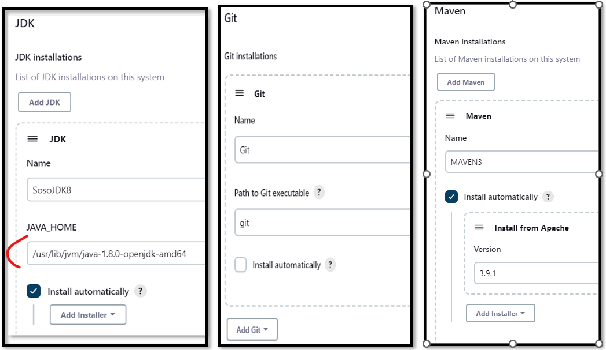
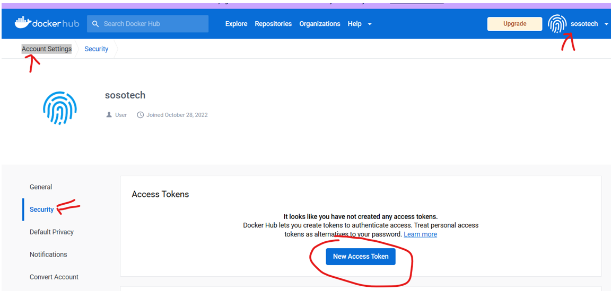

Jenkins
Setup
NOTE: Don't Forget to update your inbound Security Group with TCP-port 8080 If you have any issues, then: curl the IP address if you had any issues.
curl http://[your-put-IP]/latest/user-data LIKE SO: --> curl http://56.22.1.2/latest/user-data
Also refer to site to update your code: Optional-Link
Ubuntu installation script
#!/bin/bash
sudo apt update
sudo apt install openjdk-11-jdk -y
sudo apt install maven -y
curl -fsSL https://pkg.jenkins.io/debian-stable/jenkins.io-2023.key | sudo tee \
/usr/share/keyrings/jenkins-keyring.asc > /dev/null
echo deb [signed-by=/usr/share/keyrings/jenkins-keyring.asc] \
https://pkg.jenkins.io/debian-stable binary/ | sudo tee \
/etc/apt/sources.list.d/jenkins.list > /dev/null
sudo apt-get update
sudo apt-get install jenkins -y
Check and start the jenkins service
sudo systemctl status jenkins
sudo systemctl start jenkins
java -version
whereis git
Get Jenkins Password
sudo cat /var/lib/jenkins/secrets/initialAdminPassword
INSTALL JDK8 and MAVEN In Server terminal, Install Maven and JDK8
sudo apt update
sudo apt install openjdk-8-jdk -y
INSTALL MAVEN
Go to the Maven site and get latest version: Right-click and copy .tar link

sudo su -
cd /opt
apt install wget
wget https://dlcdn.apache.org/maven/maven-3/3.9.1/binaries/apache-maven-3.9.1-bin.tar.gz
tar -xvzf apache-maven-3.9.1-bin.tar^C
mv apache-maven-3.9.1 maven
rm -rf apache-maven-3.9.1-bin.tar.gz
CD to ROOT and Copy the java path The path to add in Jenkins will be: /usr/lib/jvm/java-1.8.0-openjdk-amd64. See below Photo
sudo su -
ls /usr/lib/jvm

Configure [Git, Maven, JVM ]on Jenkins GUI. In the Jenkins UI --> manage Jenkins --> Global Tool Configuration [save]
JDK | Git | MAVEV

Configure Credentials
Configure the following credentials - AWS - DockerHub --> (generate Token) My account --> security --> secret text - k8s Config - sonarqube --> (generate Token) My account --> security --> secret text
Navigate to: Jenkins UI --> manage Jenkins --> Manage Credentials --> System --> Global credentials

configure Dockerhub
-
Log into your dockerhub account and create a token in settings --> security: LINK 
Jenkins Jobs
Demo Jobs
Pipeline
There are 2 Options to use here: 1. Pipeline script 2. Pipeline script from SCM
Some Sample Pipeline Scripts:
pipeline {
agent any
stages {
stage('Welcome to sosotech') {
steps {
sh '''
aws --version
'''
}
}
}
}